Total Sucursales para WooCommerce
Sucursales filtradas por el estado del cliente, catálogo por sede y retiro en tienda sólo en la sucursal más cercana dentro de un radio. Todo sobre Multi Locations, Advanced Shipping y States and Municipalities of Venezuela.
Qué hace el plugin
Es un plugin "pegamento": no reemplaza a los otros tres, los conecta. Multi Locations sigue siendo donde se cargan las sucursales y el stock; Advanced Shipping sigue siendo donde se crean las tarifas; States and Municipalities sigue aportando estados y municipios.
Una sola idea para no perderse: las "sucursales" son las Locations de Multi Locations. El plugin no tiene su propia lista de sedes. Si una sede no existe en Multi Locations, no existe para nadie.
Requisitos e instalación
Instala y activa en este orden. El plugin detecta lo que falta y lo avisa en el admin.
| Plugin | Obligatorio | Para qué |
|---|---|---|
| WooCommerce | sí | Base. |
| MULTILOCA – Multi Locations Inventory Management | sí | Sucursales, stock por sede, selector de sede, carrito por sede. |
| Advanced Shipping for WooCommerce | recomendado | Reglas de envío con las condiciones "Total Sucursales". Sin él no hay condición de pickup por radio. |
| States and Municipalities of Venezuela for WooCommerce | recomendado | Estados con código (ZU, DC…) y lista de municipios. Los códigos de estado deben coincidir entre la sede y el cliente. |
| Total Sucursales | sí | Este plugin. Actívalo al final. |
Subir el zip
- Descarga
total-sucursales.zipdesde la ramareleasedel repositorio (carpetadist/). - WordPress → Plugins → Añadir nuevo → Subir plugin → elige el zip → Instalar ahora → Activar.
- Abre WooCommerce → Ajustes → pestaña Total Sucursales. Al pie hay un cuadro "Estado de la integración" con un check por cada plugin detectado.
Tema de bloques (Greenshift, Twenty Twenty-Five…): soportado. El plugin filtra el bloque Product Collection y añade sus controles al checkout por bloques. Ten en cuenta que Multi Locations por sí solo no filtra la tienda en temas de bloques; el filtro que se usa es el de este plugin (paso 05).
Sucursales en Multi Locations
Ruta: Productos → Locations (también MULTILOCA → Manage Locations). Cada sede necesita dos datos que Multi Locations no obliga pero este plugin sí usa: el estado y las coordenadas.
- State: selecciona el estado. Este código es el que se compara con el estado del cliente.
- Location Lat / Lng: latitud y longitud de la tienda. Sin ellas no se calcula distancia y la sede nunca será elegible para retiro. Se obtienen con clic derecho sobre el local en Google Maps u OpenStreetMap.
- City, Street address, Phone, horario: opcionales, se muestran en el checkout y el pedido.
- Elimina o deja sin stock la sede "Online Store" que Multi Locations crea al activarse: no tiene estado ni coordenadas y es la sede por defecto cuando el cliente aún no eligió.
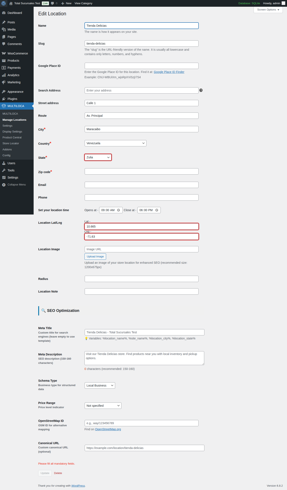
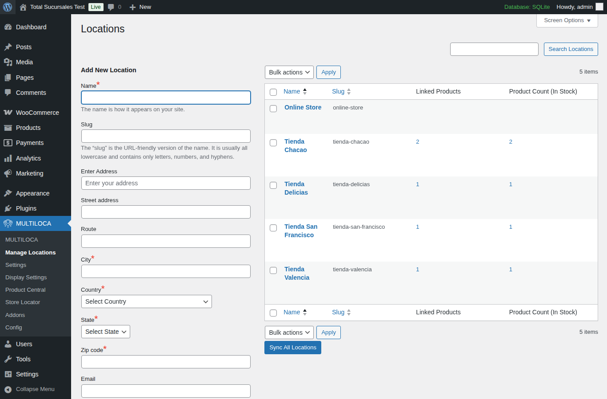
Stock por sucursal en cada producto
Multi Locations sólo asigna sede a los productos que gestionan stock. Un producto sin gestión de stock no lleva sede en el carrito, no entra en los paquetes por sede y no se puede evaluar para retiro.
- Producto → Inventario → marca "Track stock quantity".
- En la caja lateral Locations marca las sedes donde se vende.
- En Inventario aparece un bloque por sede marcada: carga Stock quantity en cada una.
- Para productos variables, el stock por sede se carga en cada variación.
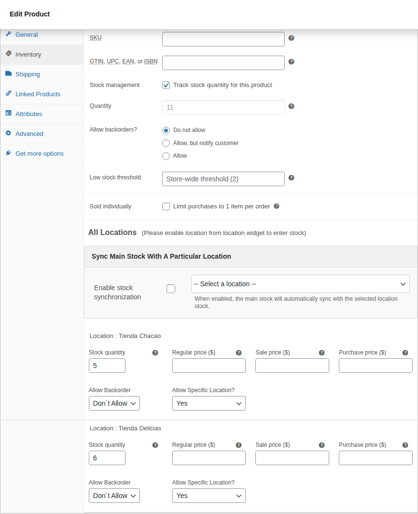
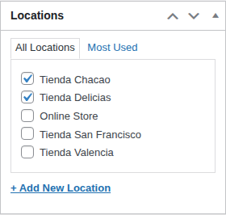
El catálogo por sede oculta los productos con gestión de stock que tengan 0 en la sede activa (salvo que admitan reservas). Los productos sin gestión de stock se muestran siempre.
Ajustes de Multi Locations que importan
Ruta: MULTILOCA → Settings. Sólo tres decisiones afectan a este plugin. El resto de Multi Locations se configura como el cliente prefiera.
a) Modo de carrito: elige uno
| Objetivo | Ajuste en Multi Locations | Cómo se comporta el envío |
|---|---|---|
| Una sola sede por pedido (requisitos 6 y 7 del cliente) | Pestaña Location → Restrict to One Location = activado. Split order Packages by location = desactivado. | Un paquete. Si la sede del carrito está a ≤ radio del cliente → retiro en tienda; si no → envío nacional. |
| Varias sedes por pedido (sección "Determinar envío") | Pestaña Shipping and Payment Method → Split order Packages by location = activado. Restrict to One Location = desactivado. | Un paquete por sede. Sólo la sede más cercana dentro del radio recibe retiro; las demás, envío nacional. El pedido tendrá tantas líneas de envío como sedes. |
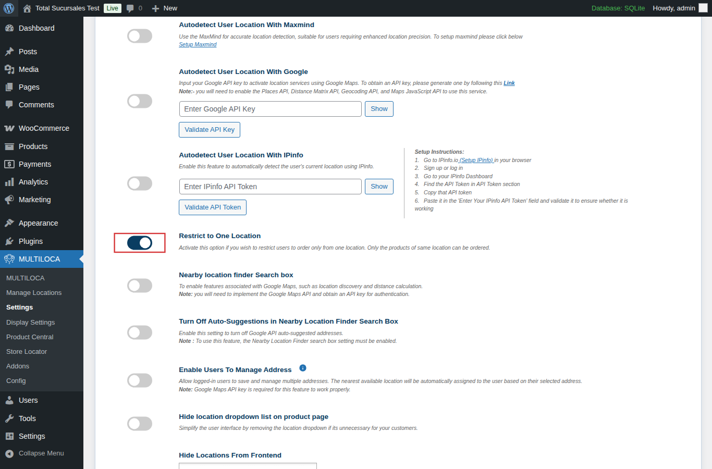
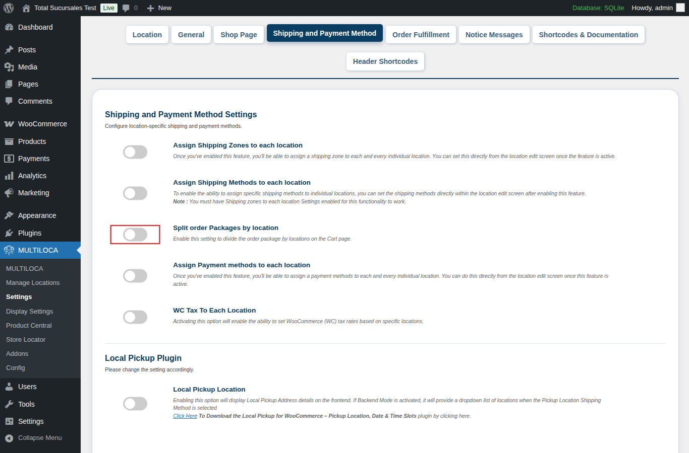
b) Catálogo: apaga el filtro de Multi Locations
Pestaña Shop Page → Display Only In-Stock Items for Selected Location: déjalo desactivado. Este plugin hace lo mismo con una consulta mucho más ligera y además cubre bloques y Store API, cosa que el filtro de Multi Locations no hace. Tener los dos activos no rompe nada, pero ralentiza la tienda.
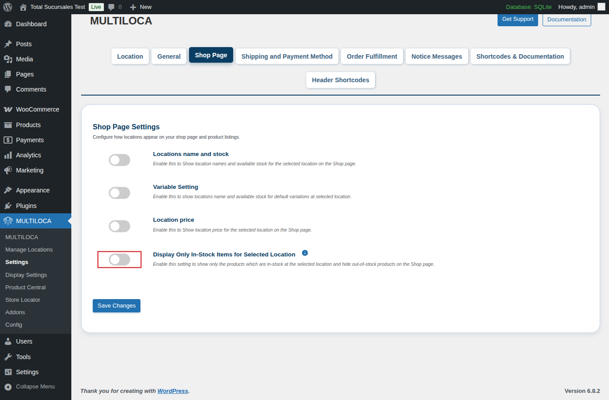
c) Detección de ubicación de Multi Locations
Deja apagadas las opciones "Autodetect User Location With…" de Multi Locations. La detección la hace este plugin, y activar las dos a la vez produce dobles preguntas de permiso al usuario.
Ajustes de Total Sucursales
Ruta: WooCommerce → Ajustes → Total Sucursales. Los valores por defecto sirven para la mayoría de tiendas; revisa sobre todo el radio y el geocodificador.
| Ajuste | Por defecto | Qué hace |
|---|---|---|
| Detección del estado | GPS y, si falla, preguntar | GPS: pide la posición al navegador y toma el estado de la sede más cercana. Preguntar siempre: muestra un selector de estados en la primera visita. No detectar: sólo usa la dirección guardada de la cuenta o el shortcode del header. |
| Distancia máxima para inferir el estado | 100 km | Si la sede más cercana al GPS está más lejos que esto, no se asume el estado y se pregunta. Evita asignar Zulia a alguien que navega desde Mérida. |
| Título y texto del selector | "¿Desde qué estado nos visitas?" | Textos del modal de primera visita. |
| Filtrar el catálogo por stock de la sucursal | activado | Oculta productos sin stock en la sede activa en loop clásico, shortcodes, Product Collection y Store API. |
| Checkout por bloques: municipio como select | activado | Sólo actúa si la página de checkout usa el bloque. Añade un select de municipios por estado y oculta el campo de ciudad libre. En el checkout clásico no hace nada porque ahí ya lo hace States and Municipalities. |
| Producto: mostrar sólo la sucursal seleccionada | desactivado | En la página de producto oculta las demás sedes cuando ya hay una elegida. |
| Radio de retiro | 10 km | Umbral para que una sede sea elegible para retiro en tienda. |
| Botón "Usar mi ubicación" en el checkout | activado | Permite al cliente enviar su GPS desde el checkout si no lo hizo al navegar. |
| Mostrar distancia a cada sucursal | activado | Lista bajo los métodos de envío con la distancia y la etiqueta Retiro / Envío nacional. |
| Geocodificar la dirección de envío | Nominatim | Qué usar cuando el cliente no comparte el GPS. Nominatim (OpenStreetMap) es gratuito, requiere un correo de contacto y los resultados se guardan 30 días. Google necesita clave; si se deja vacía reutiliza la clave de Multi Locations. No geocodificar: sin GPS no hay retiro. |
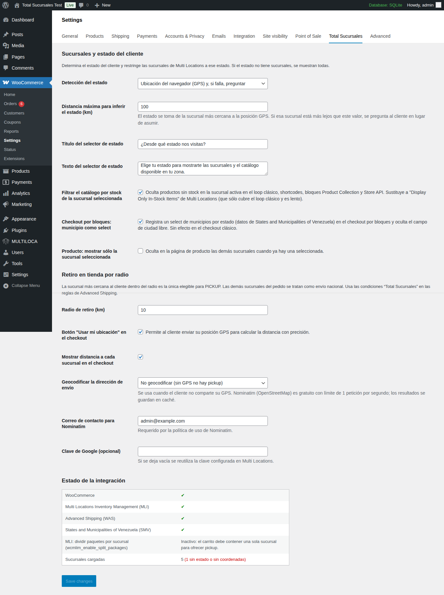
Sobre las direcciones venezolanas: la geocodificación por dirección es imprecisa en Venezuela (urbanizaciones, "casa sin número"). La fuente fiable es el GPS del navegador. Deja la geocodificación como respaldo, no como método principal.
Reglas de envío en Advanced Shipping
Ruta: WooCommerce → Ajustes → Envío → zona "Venezuela" → Añadir método → Advanced Shipping. Se necesitan dos reglas como mínimo. El plugin añade tres condiciones nuevas al desplegable, bajo el grupo "Total Sucursales".
| Condición | Operadores | Valor | Cuándo usarla |
|---|---|---|---|
| Sucursal elegible para pickup (radio) | Es / No es | Sí / No | La principal. "Sí" sólo se cumple para la sede más cercana dentro del radio. |
| Distancia del cliente a la sucursal (km) | ≤ / ≥ | número | Para tarifas escalonadas por distancia (por ejemplo delivery local hasta 5 km). |
| Sucursal del paquete | Es / No es | lista de sedes | Para una tarifa específica de una sede concreta. |
Regla 1: Retiro en tienda
- Título:
Retiro en tienda. - Condición: Sucursal elegible para pickup (radio) · Es · Sí.
- Shipping cost:
0. Guardar.
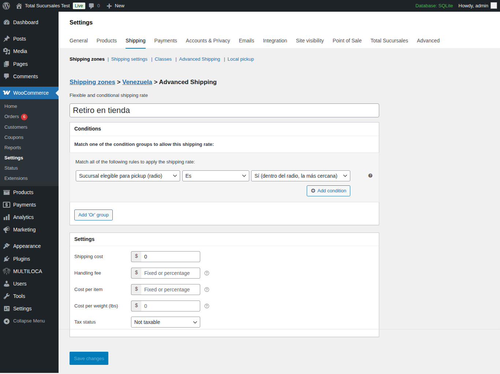
Regla 2: Envío nacional
- Título:
Envío nacional. - Condición: Sucursal elegible para pickup (radio) · Es · No.
- Shipping cost, cost per weight, etc.: la tarifa que aplique. Se pueden añadir más condiciones normales de Advanced Shipping (peso, subtotal, estado del cliente) en la misma regla.
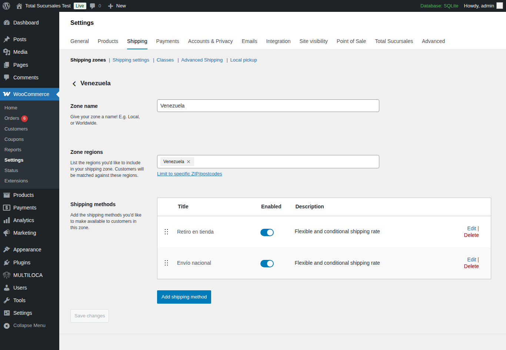
No uses el método "Pickup Location" de Multi Locations ni el "Recogida local" de WooCommerce para esto: ninguno de los dos sabe qué sede está dentro del radio. Las reglas de Advanced Shipping con la condición de arriba sí.
Selector de estado en el header
Opcional pero recomendado. Coloca el shortcode donde el cliente pueda cambiar de estado en cualquier momento, junto al switcher de sedes de Multi Locations.
[ts_selector_estado label="Estado"] ← select de estados con sedes + botón GPS
[wcmlim_locations_switch] ← switcher de sedes de Multi LocationsEn Greenshift y otros temas de bloques va dentro de un bloque "Shortcode" en la plantilla del header. El selector sólo lista estados que tienen al menos una sede, más "Todos los estados".
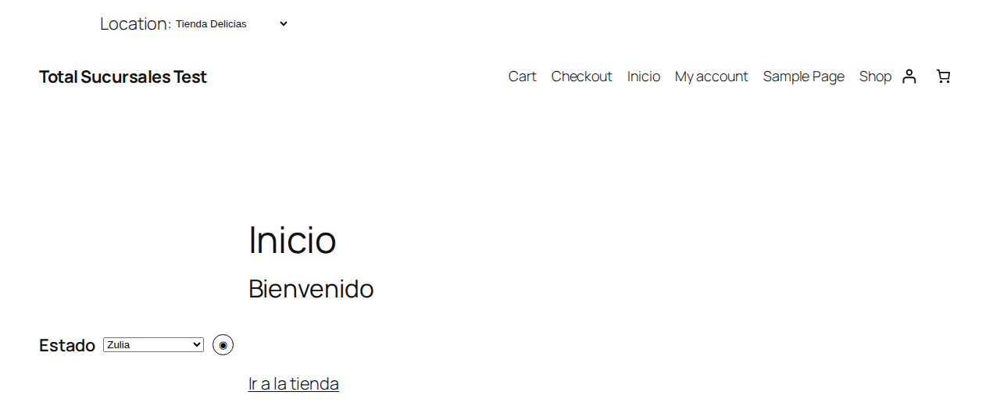
Lo que ve el cliente
Recorrido completo con las capturas de la instancia de prueba. Sirve para explicarle al cliente el comportamiento y para comparar contra la tienda real.
Primera visita
Con detección por GPS, el navegador pide permiso. Si el cliente acepta y está a menos de 100 km de una sede, se fija su estado y se recarga la página. Si niega el permiso, está lejos de toda sede o el modo es "preguntar", aparece el modal.
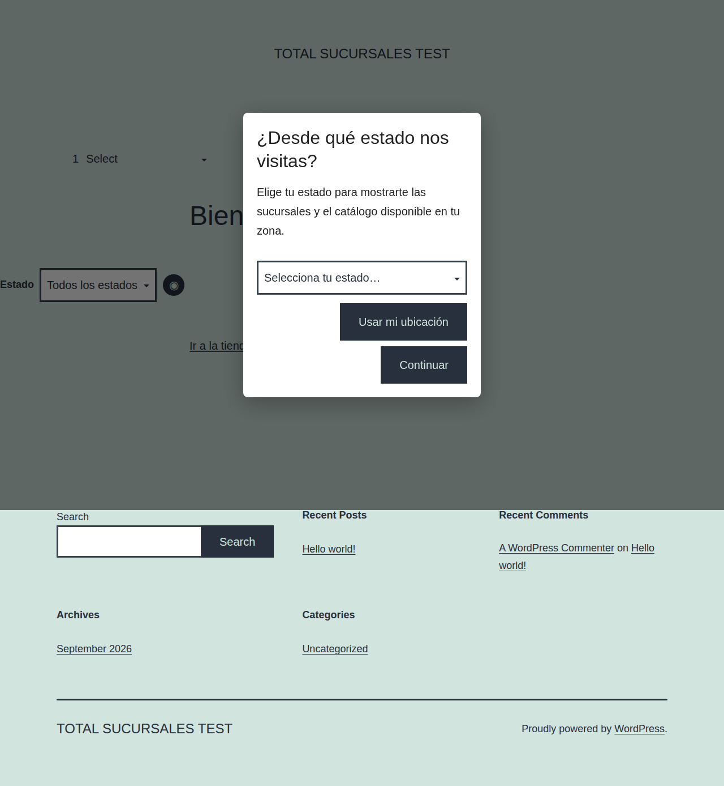
Tienda y producto filtrados
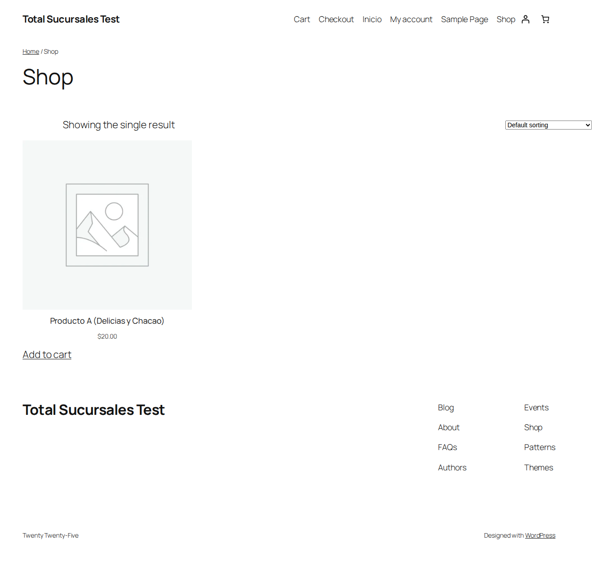
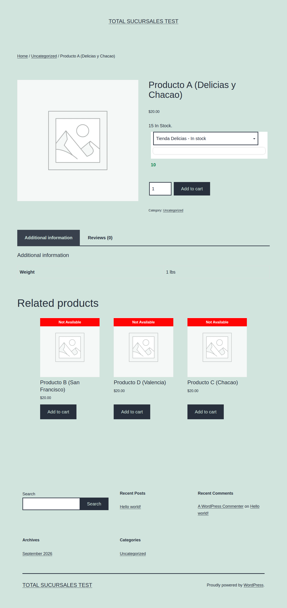
Checkout clásico
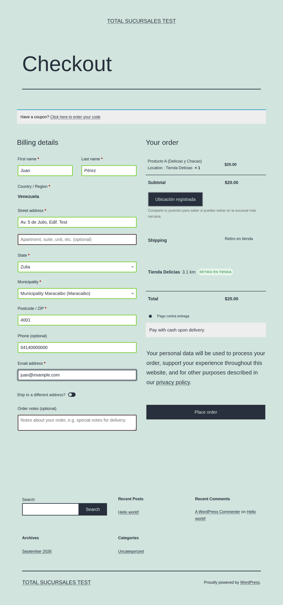
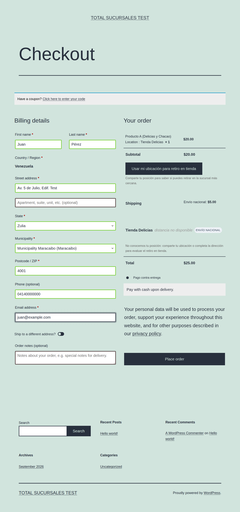
Checkout por bloques
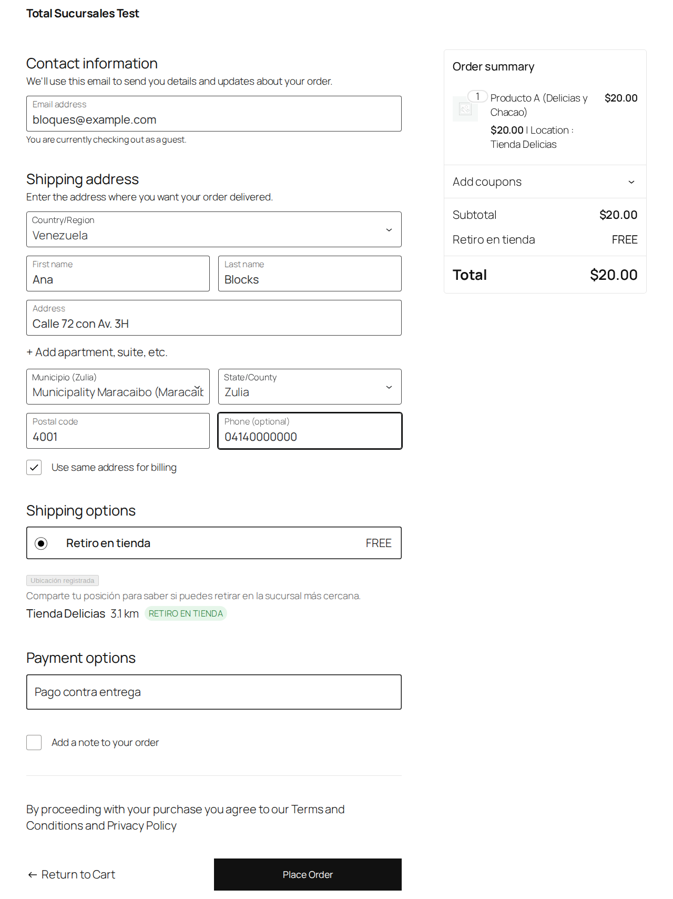
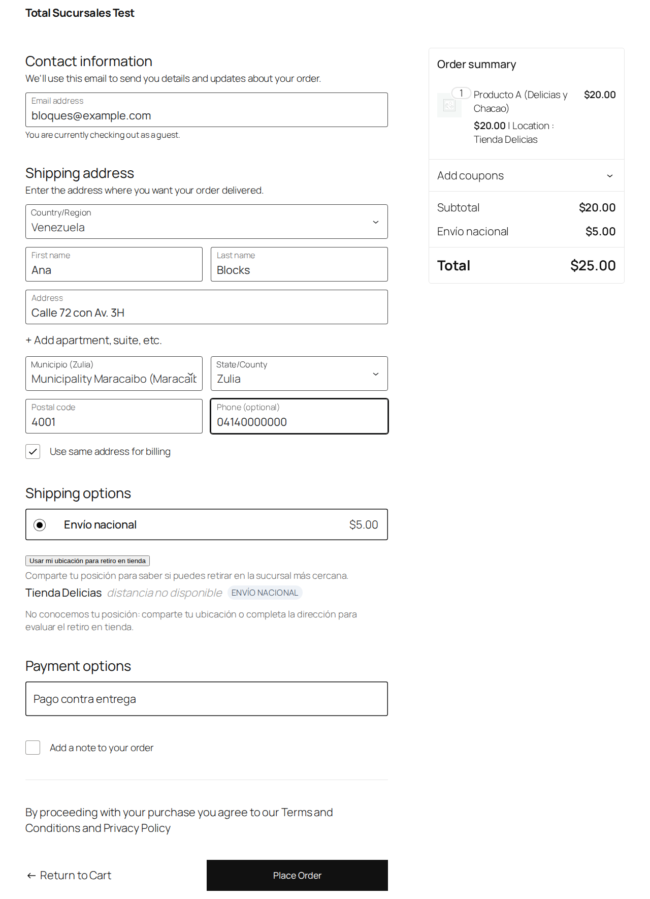
Pedido con dos sedes (modo split)
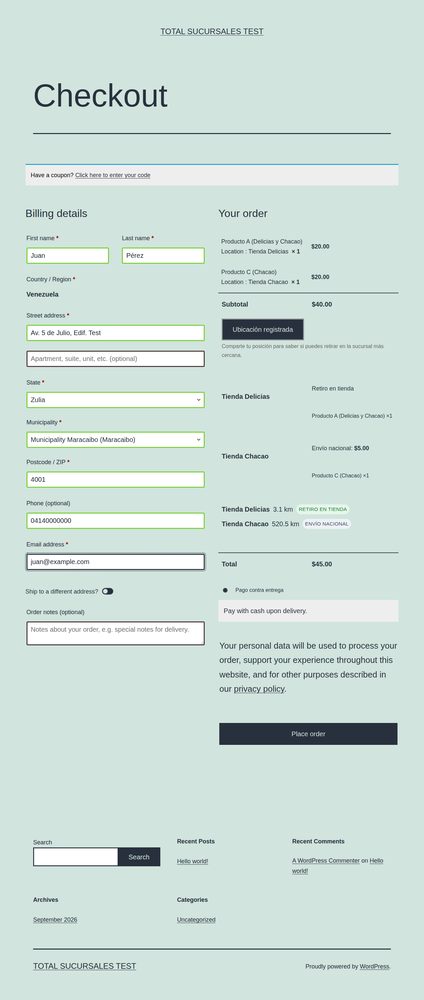
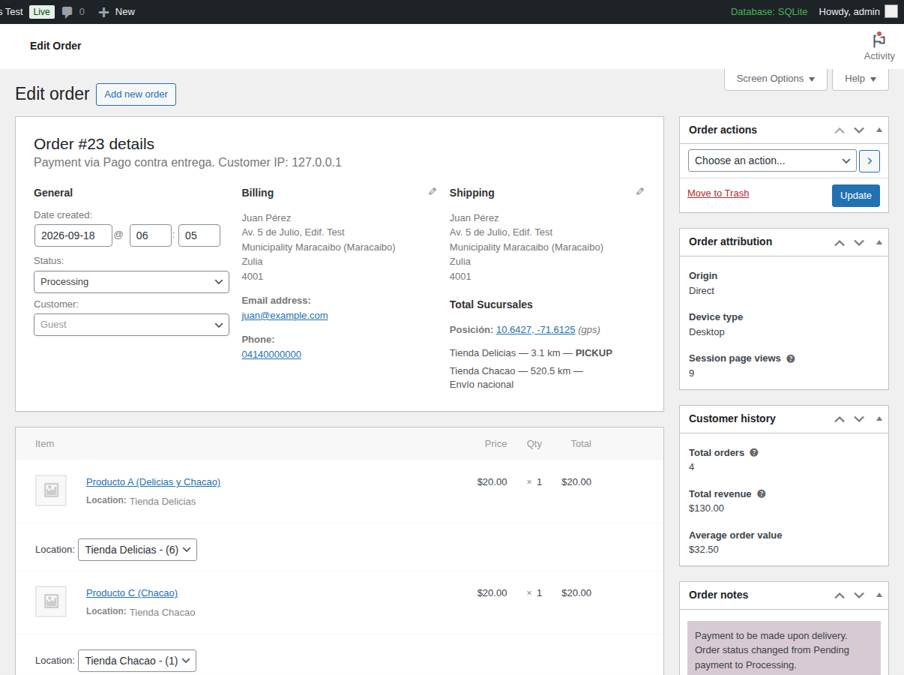
Verificación antes de entregar
Haz este recorrido en la tienda real con una ventana de incógnito. Cada punto corresponde a una comprobación de la batería automatizada del repositorio.
- En WooCommerce → Ajustes → Total Sucursales, "Sucursales cargadas" no marca ninguna sin estado ni sin coordenadas (o sólo la "Online Store" si decidieron dejarla).
- Primera visita con GPS permitido cerca de una sede: la página se recarga y el selector del header muestra el estado correcto.
- Primera visita con GPS denegado: aparece el modal; al elegir un estado, el switcher de Multi Locations sólo lista sedes de ese estado.
- Elegir un estado sin sedes o "Todos": el switcher lista todas.
- Tienda: sólo aparecen productos con stock en la sede activa. Cambiar de sede cambia el catálogo.
- Producto: el select de sede no muestra sedes de otros estados.
- Checkout con GPS a menos del radio: aparece "Retiro en tienda" y la distancia. Con GPS lejos: sólo "Envío nacional".
- Checkout sin GPS: sólo "Envío nacional"; al pulsar "Usar mi ubicación" y aceptar, aparece "Retiro en tienda" sin recargar.
- Si usan split: con dos sedes en el carrito, sólo la más cercana ofrece retiro.
- Pedido creado: en el admin aparece el panel "Total Sucursales" con posición, distancias y sede de pickup.
Problemas comunes
| Síntoma | Causa probable | Solución |
|---|---|---|
| Nunca aparece "Retiro en tienda" | La sede no tiene Lat/Lng, o el cliente no compartió GPS y la geocodificación está en "No geocodificar". | Cargar coordenadas en la sede. Revisar el geocodificador. Probar con el botón del checkout. |
| Aparecen las dos opciones a la vez | Las reglas de Advanced Shipping no tienen la condición, o una está en "Sí" y la otra sin condición. | Revisar que "Envío nacional" tenga la condición en "No". |
| La tienda sale vacía | La sede activa es la "Online Store" sin stock, o el filtro de Multi Locations está activo en un tema de bloques. | Borrar o cargar stock en "Online Store". Apagar el filtro de Multi Locations y dejar el de este plugin. |
| El switcher de sedes de Multi Locations no cambia al elegir | Multi Locations sólo carga el script que envía ese formulario cuando tiene activado alguno de sus modos de autodetección. | Activar un modo de detección en Multi Locations (por ejemplo "With Browser") o usar el popup de sedes [wcmlim_locations_popup]. |
| El cliente ve un estado equivocado | Está lejos de las sedes y su estado se dedujo por la sede más cercana. | Bajar "Distancia máxima para inferir el estado" o usar el modo "Preguntar siempre". |
| En el checkout por bloques no aparece el municipio | El ajuste "Checkout por bloques: municipio como select" está apagado, o States and Municipalities no está activo. | Activar ambos. |
Errores en la consola del navegador: google is not defined, registerCheckoutFilters | Son de Multi Locations, que carga scripts de Google Maps y de bloques sin comprobar dependencias. | No afectan a este plugin. Reportar a Techspawn si molestan. |
Para desarrolladores
Código en la carpeta total-sucursales/ del repositorio. La arquitectura y el flujo están en ARQUITECTURA.md; el entorno de pruebas reproducible en tests/e2e/README.md.
Hooks
| Hook | Tipo | Uso |
|---|---|---|
ts_excluded_location_ids( $ids, $state, $manual ) | filtro | Cambiar qué sedes se ocultan al cliente. |
ts_pickup_eligible_package_key( $key, $packages, $coords, $radius ) | filtro | Cambiar qué paquete recibe retiro (por defecto el más cercano dentro del radio). Devolver null para ninguno. |
ts_catalog_excluded_product_ids( $ids, $location_id ) | filtro | Ajustar los productos ocultos por sede. |
ts_geocode_result( $result, $address, $provider ) | filtro | Sobrescribir o corregir la geocodificación. |
ts_location_filter_applies( $bool ) | filtro | Desactivar el filtro por estado en contextos concretos. |
ts_customer_state_changed( $new, $old, $source ) | acción | Reaccionar al cambio de estado del cliente. |
Datos que deja en el pedido
_ts_customer_state, _ts_customer_lat, _ts_customer_lng, _ts_coords_source (gps | geocode), _ts_radius_km, _ts_pickup_location_id, _ts_pickup_location_name y _ts_packages (sede, distancia y elegibilidad por paquete). Compatible con HPOS.
Publicar una versión nueva
cd total-sucursales && cd .. && zip -r total-sucursales.zip total-sucursales -x "*.gitkeep"
git checkout release && cp total-sucursales.zip dist/ && sha256sum dist/*.zip > dist/SHA256SUMS
git commit -am "Release x.y.z" && git pushSube también el número de versión en la cabecera de total-sucursales.php y en readme.txt.